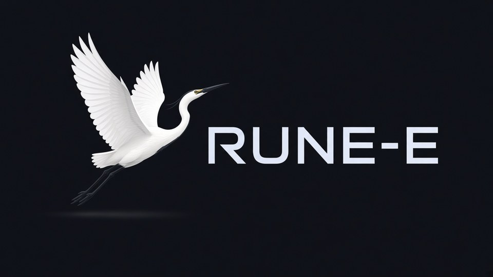

Clarity · Structure · Accountability
Roskr LC is a Virginia company building RUNE-E, a trip operating system for structured coordination — trip identity, proof, and tender readiness in one spine.
We keep a clean line between arranging transportation and operating it. Operators hold the certificates. We hold the process: evidence gates, clear roles, and accountable billing against a single Trip ID.

Proof
Critical moves need proof that travels with the trip — not screenshots scattered across personal chat. The checklist below is the public-facing summary of our internal chain-of-custody photo gates (productized in RUNE-E as required evidence slots).
Roskr does not claim OPTN / TransNet membership. Organ packaging and Donor ID duties sit with OPTN members and OPOs under their rules; we coordinate evidence on trips we arrange.
Roles
| Role | Who | What it means |
|---|---|---|
| Arranger / broker | Roskr LC | Sells, offers, or negotiates transportation by an authorized carrier for compensation — without providing the motor vehicle (or aircraft) transportation itself as the default. |
| Operator / carrier | Hired vendor | Holds the operating authority (e.g. motor carrier registration; FAA Part 135 certificate for air) and performs the move. |
If a contract would bind Roskr to transport as the carrier, that is the wrong shape — we refuse carrier-in-fact patterns and hire an authorized operator instead.
A federal property broker may not provide transportation as a motor carrier unless separately registered as one. A passenger-broker license does not authorize providing the actual passenger transportation.
Stacks we keep separate (house rule): organ · specimen · patient — do not mix on the same run / form without an explicit, later-approved control.
Not legal advice.
Map
Network maintains a verified directory of Part 135 certificate holders that publish organ-transport pages (public sources only; Mid-Atlantic preferred).
As of 2026-08-28: 11 operators with a verified certificate number and a public organ-transport page. Mid-Atlantic HQ examples include:
Additional operators on the national roster serve Mid-Atlantic lanes from other HQs. Arrangers that do not hold their own Part 135 number are tracked separately and are not listed here as certificate holders.
Public DMAS bulletin Changes to Cardinal Care Fee-For-Service Transportation Services (Effective Date field September 15, 2026; date_seen 2026-09-23).
| Lane | Broker (as of bulletin) |
|---|---|
| Cardinal Care FFS NEMT | MTM Inc. (selected via competitive procurement); FFS members use MTM app beginning October 1, 2026 to schedule / cancel / track / view trips |
| FFS reservation phones (unchanged per bulletin) | Reservation (866) 386-8331 · Where’s My Ride (866) 246-9979 |
| FFS mileage reimbursement | Logs / payment move from ModivCare → MTM |
| Managed care (unchanged) | Humana & Sentara → ModivCare; Anthem → MTM; Aetna → Medidrive; United Healthcare → SafeRide |
This is intel / buyer education for who currently brokers Cardinal Care transportation — not a Roskr service line, bid, portal account, or broker relationship. Managed-care transportation is explicitly unchanged per the bulletin. Prefer this bulletin over stale DMAS pages that may still list ModivCare for FFS.
Public awarded unit tariffs ($/run, $/mile, $/hour) for organ-ground courier work were not found in Network/Data hunts (2026-08-27). We therefore do not publish a ground rate card here. Ground capacity is treated as tendered per request to eligible company vendors — see Bid Desk.
Accountability
Every artifact inherits the same Trip ID.
Capacity
When a customer request lands, Bid Desk frames a post-request tender to eligible companies (LLCs, carriers, Part 135 charter) — not a mass open gig pool under day-control.
Award stays with Roskr leadership. Bid Desk frames options; it does not invent legal or tax advice. LLC formation / insurance links, when offered, are checklists and external vendor links only.
Product note: Bid-board UI is on the RUNE-E roadmap — this page describes the lane and readiness, not a claim that a public marketplace is live today.
Questions about trust, readiness, or confidential consultation: use the site contact path.